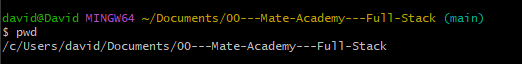
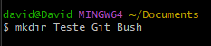
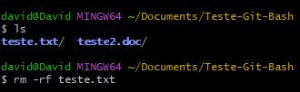

Command You Need to Know
Intro
Aqui iremos aprender como trabalhar com linha de comando em um terminal.
Aqui iremos aprender como trabalhar com linha de comando em um terminal.
Para estarmos utilizando o terminal, podemos estar abrindo o git bash
(Print Word Direct): ele nos mostra o caminho absoluto, para que possamos saber exatamente em que pasta estamos do terminal, usamos ele principalmente para nao acabarmos cometendo erros em modificar algum arquivo errado, assim saberemos corretamente o arquivo modificado.

Exibe todas as informacoes dentro da pasta selecionada. Os arquivos sao em brancos e pasta em corer. Porem nao conseguimos verificar arquivos ocultos.
Dessa forma conseguimos tambem verificar os arquivos ocultos da pasta selecionada.
Usamos para podermos selecionar o arquivo que queremos acessar.
Usando dessa forma, voltamos para a raiz de nosso PC.
Com ele conseguimos voltar uma pasta do arquivo que estavamos selecionado.
Com ele conseguimos criar pasta no local em que selecionamos com cd.

Com ele conseguimos acessar arquivos de texto
Usamos para remover/apagar arquivos
